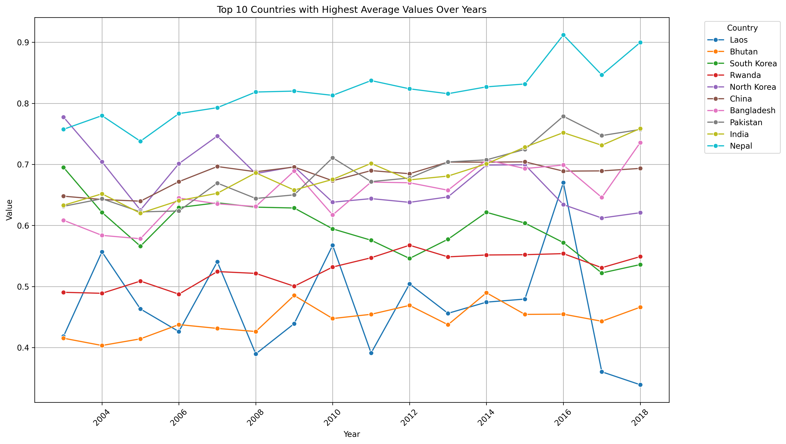

AstroTechies
Articles
Trends in CO Population-Weighted ppm: A Regional Comparison (2004-2018)

This article examines the trends in CO population-weighted parts per million (ppm) values among ten countries over a period from 2004 to 2018. The analysis reveals varying trends, with countries such as Laos and Bhutan showing a steady improvement, while others like South Korea and Nepal experience more fluctuating patterns. Understanding these trends is crucial for policy development targeting air quality improvement and carbon emission reductions.
This article examines the trends in CO population-weighted parts per million (ppm) values among ten countries over a period from 2004 to 2018. The analysis reveals varying trends, with countries such as Laos and Bhutan showing a steady improvement, while others like South Korea and Nepal experience more fluctuating patterns. Understanding these trends is crucial for policy development targeting air quality improvement and carbon emission reductions.